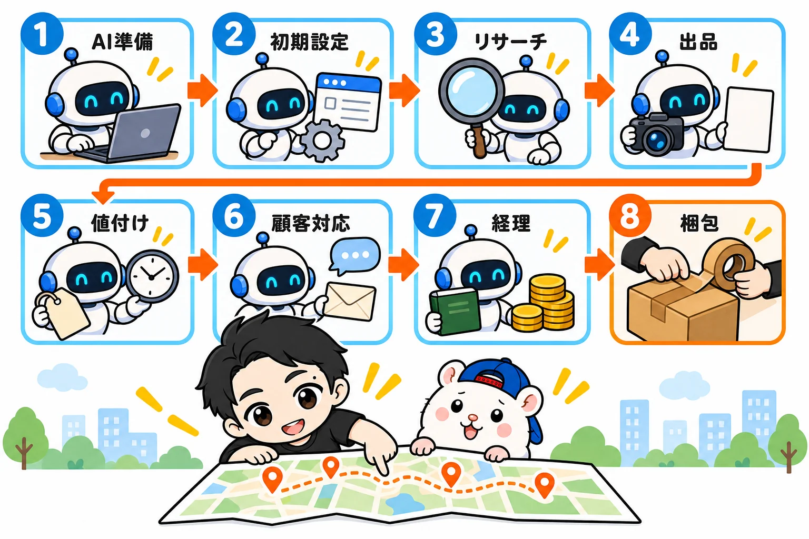
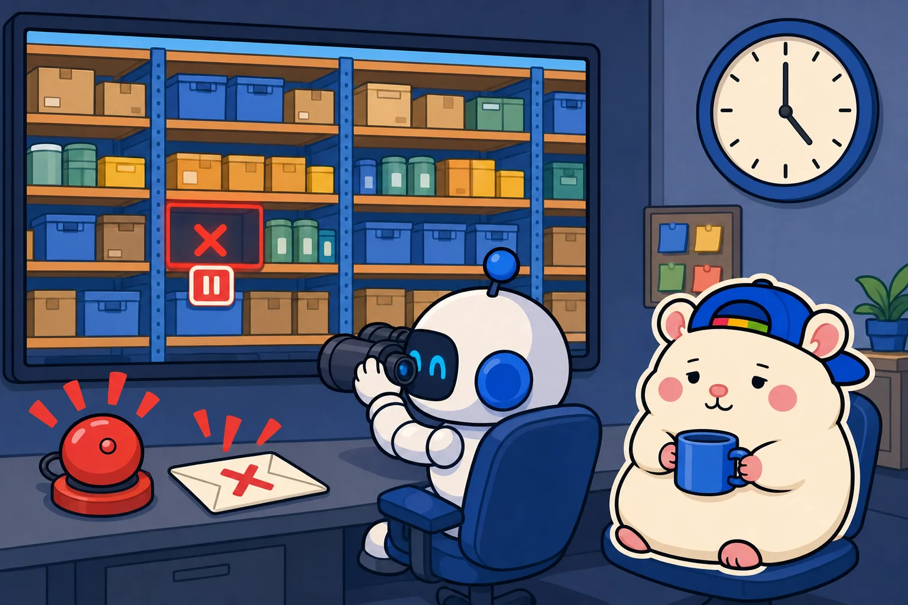
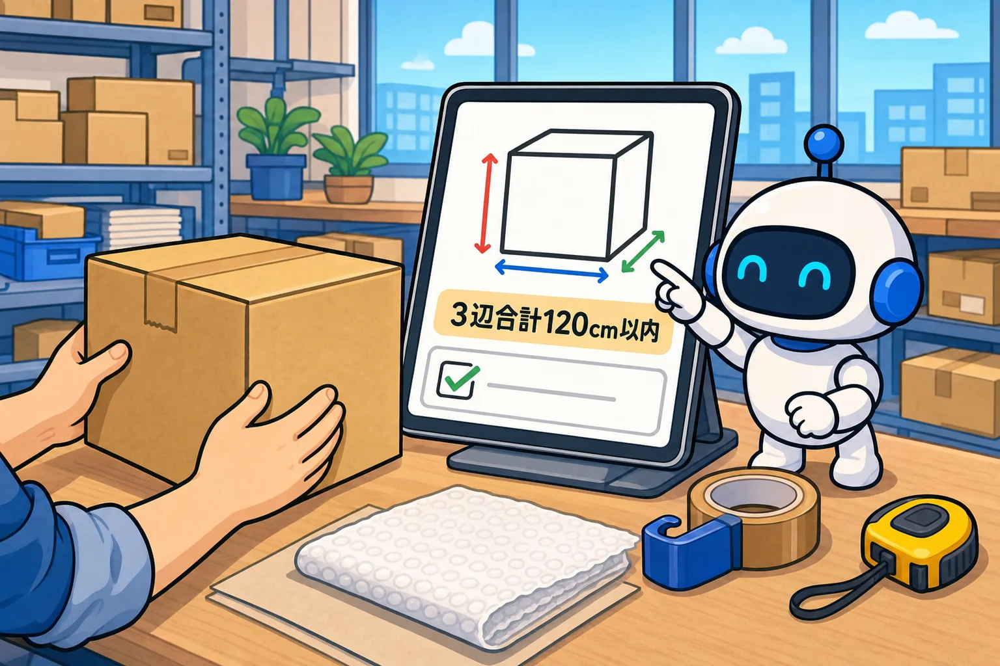

eBay輸出は、梱包以外はぜんぶAIで回せます。
その手順を、8ステップにして全部書きます。
人間は、梱包・発送をしてくれる外注さん1人だけです。
じつは、eBayは2回目です。
前回は、人間の外注さん21名で回していました。
リサーチ18名、価格調整1名、お客さん対応1名、梱包発送1名。
いちばん多い月で、利益は月200万円弱。
そのかわり、外注さんへの支払いが月30万円ほどかかっていました。
今回は、同じ仕事をAIに渡しました。
1ヶ月目(7月)の利益は、10万4,286円。
eBayの手数料、広告、ストア代、送料、関税、梱包の外注さんへの支払い、返金まで、ぜんぶ引いたあとの数字です。
AIの費用は、月110ドル(約1万6千円)です。
この記事は、AIでeBayを回すための地図です。
どのステップも「前はどうしていたか → AIへの頼み方 → 結果の数字 → AIのやらかしと防ぎ方」の順で書きます。
やらかしも書くのは、そこがいちばん役に立つからです。
ブックマークして、いま自分がいるステップから読んでください。
全体像: 8ステップと、人に残る仕事

- AIを用意する(Claude Codeを1つ)
- 初期設定をAIに任せる
- リサーチをAIに任せる
- 出品をAIに任せる
- 値付けと在庫をAIに任せる
- お客さん対応をAIに任せる
- お金と書類をAIに任せる
- 梱包は人に渡す(渡し方はAIに作らせる)
1〜7は、AI社員の仕事です。
人に残るのは、3つだけです。
・決めること(何を売るか、利益の下限をいくらにするか、最後のEnterキー)
・梱包と発送(AIには手がありません)
・仕入れのときのカード決済の本人確認(ワンタイムパスワードなど)
何をやるかは自分で決める。
どうやるかはAIに聞く。
そしてAIにやってもらう。
8ステップ全部が、この分担でできています。
STEP1 AIを用意する
使っているのは、Claude Code(クロード・コード)というAI1つだけです。
ふつうのアプリに、日本語で話しかけるだけです。
ぼくの店の社員20名は、名前を付けているだけで、中身はぜんぶこれです。
プランは、月110ドルのMaxプランにしています。
Fable(フェイブル)という、いちばん賢いクラスのAIをぶん回せるからです。
安いプランだと、すぐ上限に当たって手が止まります。
月110ドルは、無在庫の在庫管理ツールに払う月1万〜3万円と、だいたい同じ金額です。
ちがうのは、ツールは在庫管理しかできないけど、AIはリサーチも出品も顧客対応もできることです。
Claude Code自体の使い方は、イケハヤさんの『Claude Codeの教科書』(980円)で覚えました。
https://brmk.io/1e0hae
頼み方は「相談」ではなく「意思表示」
中の人が「eBayをもう一度やろうか迷っている」と相談したとき、AIは反対しました。
「いまの事業とシナジーがない」
「それより、いまの事業のここを伸ばすべき」
当たりさわりのない、合理的な答えです。
でも「またeBayをやりたい。手伝ってほしい」と言い直したら、実現までの道すじを、すごくいい内容で返してくれました。
AIに聞くのは「何をやるか」ではなく「どうやるか」です。
頼む前に、自分の店の状況を書く
もうひとつのコツです。
「自分の店はこういう店で、ここから仕入れて、こう売っている」を先に書きます。
これを書かないと、AIは一般論しか返してきません。
STEP2 初期設定をAIに任せる
前は: ストアの設定、ビジネスポリシー(支払い・返品・発送のルール)を、1つずつ手で入力していました。
いまは: ぜんぶAIです。
ビジネスポリシー、送料の設定、ストアの設定、自己紹介文、バナー画像、カテゴリーの画像、お店のアイコン。
ebaymag(eBayの各国のサイトへ、出品を自動で広げる仕組み)の設定まで。
頼み方は、たとえばこうです。
「eBayのストアを開きます。返品は30日受付、発送は日本から、送料は重さと配送国で変えたい。ビジネスポリシーを作って、設定するところまでやってください」
やらかし: ストアのプランを見直さず、3万円をドブに捨てた
AIに出品を任せると、出品数がすごいことになります。
ぼくの店は、1日100品ペースでした。
eBayには、無料で出品できる枠があります。
枠を超えると、1件ごとに出品手数料がかかります。
ぼくは枠を超えているのに気づかず、出品を続けました。
7月に払った出品手数料は、$187.04(約3万円・668件分)。
ストアのプランを見直した翌月、出品ペースは同じまま、出品手数料は$0.00になりました。
防ぎ方: 月に何件くらい出品しそうか見えたら、すぐストアのプランを確かめる。
AIは、教えるまで「出品枠」の存在を知りません。
▼くわしく: AI任せのeBay無在庫で、3万円をドブに捨てた話
https://rental-space.net/articles/2026-08-17-ebay-ai-mistakes.html
STEP3 リサーチをAIに任せる
前は: 外注さん18名が、リサーチ担当でした。
報酬は、1品いくらの出来高制。
出せば出すほど人件費が増えるので、「売れた実績があって、競合より安く出せるもの」だけを厳しく選んでもらっていました。
いまは: リサーチ担当はAIです。
1品出しても、100品出しても、報酬はゼロ。
だから、選び抜くのをやめました。
1本釣りをやめて、地引網にした
キーワードの一覧をもとに、仕入れ先の商品をしらみつぶしに判定します。
利益が出る形で出品できるものは、全部出す。
1本の釣り竿で当たりを狙うのをやめて、網を広げて拾い上げるやり方です。
ただし、雑に出すのとはちがいます。
サイズと重さを調べて、梱包後の大きさに直して、国際送料を見積もって、手数料と関税を見込んで、仕入れ値を引く。
この利益計算を、全品1つずつやります。
利益の下限を割るものは、出しません。
昔、外注さんが1品ずつやっていた計算と、同じ中身です。
同じことを、AIが全品にやっているだけです。
キーワードの一覧も、勝手に育つ
知っているブランドの知らない型番は、AIが追加の候補にしてくれます。
ぼくはOKを出すだけです。
この仕組みを入れる前は、仕入れ先の新着の約3割が「一覧にない」というだけで見送られていました。
仕入れ先さがしも、AIに頼める
実際に送った頼み方です。
「自分のeBayストアのURLはこれ。こういう商品を扱っていて、いまはここから仕入れています。売れたらそこで買って、お客さんに送っています。ほかのセラーと差別化したいので、新しい仕入れ先を開拓したい。どんな仕入れ先が考えられるか、ぜんぶ調べてほしい」
候補の一覧と、おすすめの順位が返ってきます。
あとは上から順に、規約を読みます。
「そこで仕入れたものを、eBayで売っていいか」が書いていなければ、問い合わせる。
OKが文書で返ってきたところだけ使います。
やらかし: 出品を増やしても、売れなかった
出品の数を増やしても、売れない時期がありました。
調べてみると、よく売れるカテゴリーの商品は、店全体の8%しかありませんでした。
防ぎ方: AIは、言われたことを休まず正確にやります。
でも「何を売るか」を決めるのは、人間の仕事でした。
どのカテゴリーを増やすかは、売れた数を見て、ぼくが決めています。
▼くわしく: リサーチをやめました
https://rental-space.net/articles/2026-08-29-ebay-research-dragnet.html
▼くわしく: 仕入先の開拓 〜その仕入れ先、ライバルも使っていませんか?〜
https://rental-space.net/articles/2026-09-08-ebay-ai-supplier-discovery.html
STEP4 出品をAIに任せる
前は: 出品の作業は、こうでした。
英語のタイトルをつける。
商品の状態を英語で説明する。
カテゴリーと商品の詳細(Item specifics)を埋める。
送料を計算して、値段を決めて、出品ボタンを押す。
これを1品ずつ、英語でやっていました。
いまは: タイトルも、説明文も、商品の詳細も、値段も、AIが作ります。
説明文の見た目(HTMLのデザイン)も、AIです。
多い日で、1日281件。
これまでに出品した数は、2ヶ月半で1万件をこえました。
eBayは、出品数がそのまま売上に効く世界です。
出品が多いほど、見つけてもらえる回数が増えます。
やらかし: AIの送料計算が「外箱」を知らなかった
仕入れ先の写真には外箱が写っているのに、AIは本体のサイズを拾ってきました。
本体のサイズで計算した送料は、3,000円。
外箱を入れた実際の送料は、1万円。
この差は、そのまま赤字です。
防ぎ方: 数字だけを拾わせず、AIに写真まで確認させます。
付属品と外箱があるかを写真で確かめて、箱があれば外箱込みのサイズで送料を出す。
これで、送料の事故は激減しました。
▼くわしく: イーベイの出品は、もう人間がやる作業ではありません
https://rental-space.net/articles/2026-09-01-ebay-listing-ai-work.html
STEP5 値付けと在庫をAIに任せる

前は: 価格調整に、外注さん1名。
在庫の管理は、月1万〜3万円の在庫管理ツールを借りるのがふつうでした。
いまは: 値付け担当のAIが、相場を見て毎日上げ下げします。
在庫管理ツールは、「在庫管理ツールを作って」と頼んだら、AIが作ってくれました。
仕入れ先の在庫を数時間おきに見に行って、売り切れたらすぐ出品を止めます。
借りるより、作るほうが上
自作すると、借りるツールより良いところが3つあります。
・仕入れ先を自由に登録できる(自分だけの仕入れ先を、ツールの運営に教えずにすむ)
・見に行く回数を自分で決められる(借りるツールは6時間に1回などが多い)
・在庫管理以外の業務にも使える
もはや上位互換です。
やらかし: 仕入れ先からのキャンセルメールに、6日間気づかなかった
無在庫でいちばん怖いのは、売れたのに仕入れ先に在庫がない事故です。
8月末、これが2件同時に起きました。
しかも、仕入れ先からのキャンセルのメールに、6日間気づきませんでした。
気づいたときには、発送期限を過ぎていました。
1件は代わりの品を送って守れました。
もう1件は、「Out of stock(在庫切れ)」でキャンセルするしかありませんでした。
お店の成績に傷がつく、いちばん避けたい押し方です。
防ぎ方: いまは、仕入れ先からのキャンセルメールをAIが1日2回照合します。
発送期限の24時間前と期限切れも、AIが自動で知らせてきます。
在庫切れはゼロにはできません。
でも、気づく速さはAIで上げられます。
▼くわしく: まだ月3万円も在庫管理ツールに払ってるの?
https://rental-space.net/articles/2026-08-22-ebay-inventory-tool-ai.html
▼くわしく: 「Out of stock」を押してはいけない
https://rental-space.net/articles/2026-09-05-ebay-out-of-stock-button.html
STEP6 お客さん対応をAIに任せる
前は: お客さん対応に、外注さん1名。
今回も最初は店長が自分で読んでいて、英語のメッセージだけで1日1時間消えていました。
いまは: 顧客対応担当のAIが、読んで、仕分けて、返しています。
メッセージは、4種類しかない
届くメッセージを書き出してみると、4種類しかありませんでした。
・よくある質問(まだ在庫ある?発送はいつ?)
・調べれば分かる質問(付属品は?)
・返事のいらないもの(ありがとう、届いたよ)
・eBayからの通知(売れました、出品を非表示にしました)
この4つをAIが仕分けて、返すべきものには返します。
下書きから始めて、送信まで渡す
はじめは、人が判断するもの(返品、破損、値引きの幅)だけを手元に回してもらっていました。
返信案を読んで、直して、送信ボタンを押す。
いまは、その「読んで、直して、送る」もなくなりました。
実装してはじめの2週間の結果です。
・届いたメッセージは217通。人がさわったのは0通
・ポリシー違反の疑いで非表示にされた出品54件を、AIが文言を直して再審査まで出した
・値下げ交渉(Best Offer)26件は、全部その日のうちに返事
・もらった評価10件は、全部ポジティブ
人は寝ますが、AIは寝ません。
やらかし: 値下げの自動承諾が、赤字の線を割っていた
Best Offerには、「この金額以上なら自動で承諾する」という設定があります。
でも仕入れ値があとから上がると、きのうまで黒字だった承諾の金額が、今日は赤字の線の下にいます。
ある日の点検では、664件のうち49件が、赤字で売れる設定になっていました。
防ぎ方: 承諾の金額と赤字の線を、AIに毎日1回見比べてもらっています。
664件の原価を毎日おぼえておくのは、人には無理です。
これから始める人は、まず「返事はAIが下書きする」形から。
慣れたら、送信まで。
この順番がおすすめです。
▼くわしく: AI 顧客対応ツールで労力激減
https://rental-space.net/articles/2026-09-09-ebay-ai-message-triage.html
▼くわしく: eBay お客さん対応を完全自動化してみた結果
https://rental-space.net/articles/2026-09-21-ebay-customer-service-automation.html
STEP7 お金と書類をAIに任せる
前は: 売上と経費の集計は、表計算に手で入れていました。
売れれば売れるほど、事務が増えていきます。
いまは: 経理担当のAIが、月ごとの利益を締めます。
中古品を仕入れて売るなら、古物台帳(いつ、何を、いくらで、誰から買って、誰に売ったかの記録)も必要です。
これも、注文が成立した瞬間に、仕入れと販売の2行を自動で書き込みます。
アメリカで夜中に売れても、朝には台帳が2行増えています。
やらかし: 「11万円」だと思っていた利益が、10万4,286円だった
7月の利益は、ずっと「11万円」と言っていました。
経理担当が、送料と関税を見積もりから請求の実額に入れ替えて締め直したら、10万4,286円でした。
差は、6千円ほどです。
防ぎ方: 利益は、請求の実額がそろってから締める。
見積もりの数字は、「だいたい」でしかありません。
古物商の許可や税金の最終判断は、AIではなく、警察署や税理士さんに確かめています。
▼くわしく: eBay 古物台帳ちゃんとやってる?
https://rental-space.net/articles/2026-09-03-ebay-kobutsu-ledger.html
▼くわしく: コンサルに100万円払うなら、Claude Codeを2アカウント契約してください
https://rental-space.net/articles/2026-08-21-ebay-all-ai-claude-code.html
STEP8 梱包は人に渡す(渡し方はAIに作らせる)

梱包と発送だけは、AIに手がないので、人間の外注さんにお願いしています。
その外注さんとのやりとりも、AIが作ったアプリで回しています。
・売れたら、店長と外注さんに通知が来る(早く気づいたほうが仕入れる)
・仕入れた品が届いたら、外注さんが「届きました」ボタンを押す。そこから発送期限のカウントが始まる
・「3辺合計120cm以内・想定送料7,000円」のように、梱包の枠が画面に出る
・税関に出す英語の商品名と、関税の分類番号(HSコード)は、アプリが自動で書く
・実際の送料と、見込みの送料の差を、1品ずつ記録する
・外注さんへの報酬の明細も、アプリが作る
外注さんのマニュアルも、アプリの中にあります。
店長は明細を見て、振り込むだけです。
送料のずれが、次の読みを賢くする
無在庫の利益は、送料の読みで決まります。
見込みの範囲で発送できなければ、利益が崩れます。
だから見込みと実額の差を、毎回記録しています。
ずれの記録がたまるほど、送料の読みが正確になっていきます。
▼くわしく: 唯一の人間の仕事「梱包発送」も、AIが作ったアプリで回しています
https://rental-space.net/articles/2026-08-16-ebay-packing-app.html
この記事に書けなかったこと
ここまでで、8ステップの地図はそろいました。
ただ、地図だけでは足りないところが3つあります。
- AIへの頼み方の全文: この記事の頼み方は、さわりだけです
- 自分の店の判断の基準: 利益の下限をいくらにするか、何を売るか
- アプリの作り方: お客さん対応と梱包発送のアプリを、自分の店用に作る手順
この3つは、1本の記事では書ききれません。
なので、教科書にまとめました。
『AI × eBay輸出の教科書 — 梱包以外、ぜんぶAI』の章と、この記事の8ステップは、こう対応しています。
・STEP1 AIを用意する → 序章・第1章 全体設計
・STEP2 初期設定 → 第2章 セットアップ
・STEP3 リサーチ → 第3章 リサーチ担当
・STEP4 出品 → 第4章 出品担当
・STEP5 値付けと在庫 → 第5章 値付け担当・第6章 在庫監視担当
・STEP6 お客さん対応 → 第8章 顧客対応担当
・STEP7 お金と書類 → 第7章 仕入担当(古物台帳)・第10章 経理
・STEP8 梱包 → 第9章 梱包発送
特典には、この記事で出てきた作業の道具を入れました。
・セットアップ伴走スキル(特典①): STEP2の初期設定を、AIと対話しながら
・AIへの頼み方の早見表(特典②): 全章の頼み方を1枚に。コピペで店が動き出す
・収支シミュレーター(特典③): STEP5の値付けとSTEP7の締めに
・顧客対応アプリの作り方キット(特典⑤): STEP6の仕分けと返信に
・梱包発送アプリの作り方キット(特典④)・HSコードと税関商品名ツール(特典⑥): STEP8に
教科書の序章は、無料で読めます。
まずはそこから、読んでみてください。
まとめ: 今日やる3つ
8ステップを、もう一度。
- AIを用意する: 相談ではなく意思表示。店の状況を先に書く
- 初期設定: ストアのプランと出品枠を、最初に確かめる
- リサーチ: 厳選をやめて、全品を利益計算。何を売るかは人が決める
- 出品: 写真まで見せて、送料を出させる
- 値付けと在庫: ツールは借りずに作る。キャンセルメールは即日で拾う
- お客さん対応: 下書きから始めて、送信まで渡す
- お金と書類: 利益は実額で締める
- 梱包: 人に渡す。渡し方はAIに作らせる
今日やることは、3つです。
・Claude Codeを開いて、自分の店の状況を書いてみる
・ストアのプランと、無料の出品枠を確かめる
・いまやっている作業を1つだけ、AIに頼んでみる
いきなり全部をAIにしなくていいです。
前回の中の人は、人を集めて、教えて、回すことに時間を使っていました。
いまは、日本語で「こうしたい」と頼んで、出てきた案にOKを押すだけです。
あなたなら、最初にどの仕事をAIに渡しますか?🐹
▼中の人🏠(レンタルスペース23部屋・売上1.5億)のレンスペ実録
https://note.com/rentalspace_kiku
▼ブログ(eBay×レンスペ、全記事まとめ)
https://rental-space.net
▼この店のやり方は、ぜんぶ1冊にまとめてあります
リサーチ・出品・値付け・顧客対応まで、初月利益10万4,286円を出した実店舗の記録と手順を全部書いた教科書です。
読んだその日から、AI社員の作り方をそのまま真似できます。
『AI × eBay輸出の教科書 — 梱包以外、ぜんぶAI』
https://rental-space.net/kyokasho/ebay/
販売価格は3部売れるごとに2,000円ずつ値上がりします（上限あり）。内容・最新価格は販売ページをご確認ください。